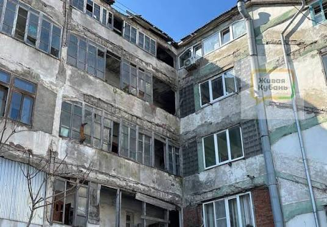
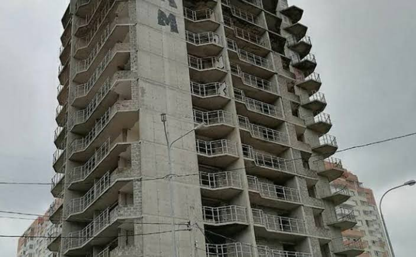
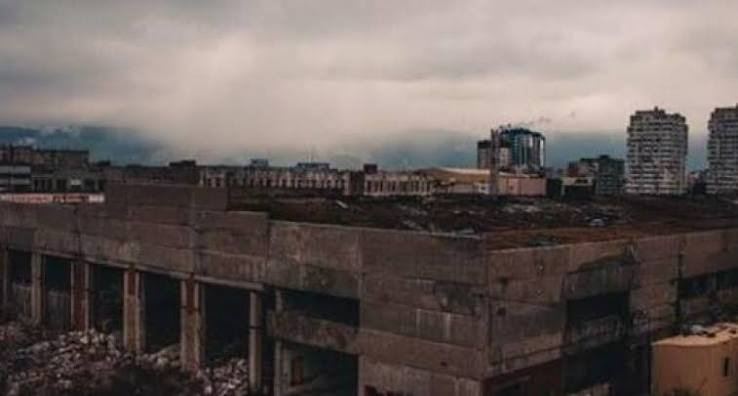
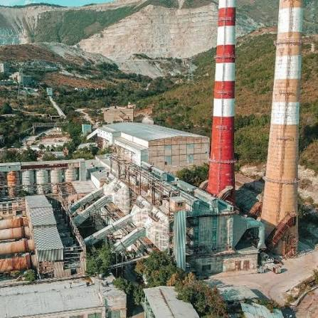

Полуразрушенное заброшенное здание возвышается рядом с площадью Героев на улице Губернского, 6. Там выбиты почти все стёкла, уже отсутствуют куски стен. Несколько раз здесь случались немаленькие пожары.

Одна из самых внушительных заброшек Новороссийска находится на улице Тобольской рядом с пенсионным фондом. В 2008 году началось строительство многоэтажки, квартиры которой предназначались для семей военнослужащих. Не хватило финансирования. А в 2012 году закончился и срок аренды земельного участка под домом. Теперь объект надо сносить. Но сделать это в плотно заселённом микрорайоне крайне тяжело.

Еще одна «заброшка», куда солиднее – высотой в четыре этажа, находится на пересечении Видова и Щорса. Местные жители часто жаловались на сборища бомжей, крики и пьяные драки в недостроенном здании. Сейчас оно окружено забором из металлопрофиля, но выглядит ограждение совсем ненадежно. При малейшем дуновении ветерка лист издает зловещий скрип, от которого по коже бегут мурашки.
В 2008 году здесь началось строительство 9-этажного дома. Но работы остановились. Когда начиналось строительство, у будущей многоэтажки было два собственника: один арендовал земельный участок, второй вкладывал средства в стройку. Но в ходе возведения дома возникли проблемы с документацией, затянулись сроки. В конечном итоге у первого закончился срок аренды земли, а второй перестал финансировать.

По сравнению с Приморским и Центральным, Южный район выглядит довольно прилично. Но всю картину портит здание заброшенного троллейбусного депо на улице Хворостянского.
В конце 80-х годов здесь начали строительство второго депо в Новороссийске: возвели производственные корпуса, административное здание, подвели контактную сеть. В начале 90-х строительство было прекращено. Здания обветшали, контактная сеть демонтирована. Пару лет назад по соседству с несостоявшимся депо построили небоскребы. Теперь местные жители жалуются, что к ним во двор летит мусор с территории заброшки и приходят в гости крысы.

Один из самых грандиозных и монументальных памятников советской индустриальной эпохи на Кубани. С самого момента основания завод непрерывно наращивал мощности, модернизировал оборудование и в свои лучшие годы считался одним из самых передовых и эффективных производств цемента во всем мире. На пике своей активности предприятие выдавало колоссальные объемы продукции.
Однако после распада СССР и затяжного экономического кризиса завод не смог адаптироваться к новым рыночным условиям. Производство постепенно сокращалось, пока окончательно не остановилось. Сейчас гигантские цеха, массивные силосные башни и индустриальные постройки привлекают лишь любителей промышленного туризма.
Живописные «графские развалины» старинного мини-дворца конца XIX века, некогда принадлежавшего известному ученому-физику. Находится в районе Сухумского шоссе, по пути на гору Сахарная глава. Сейчас заброшенный усадебный комплекс превратился в атмосферные каменные руины, окруженные густой зеленью.

Огромный африканский сухогруз (балкер), который в декабре 2018 года во время сильнейшего шторма выбросило на мель прямо у мыса Дооб в Кабардинке. Судно длиной почти 147 метров и высотой с пятиэтажный дом мгновенно превратилось в одну из самых популярных туристических достопримечательностей побережья.